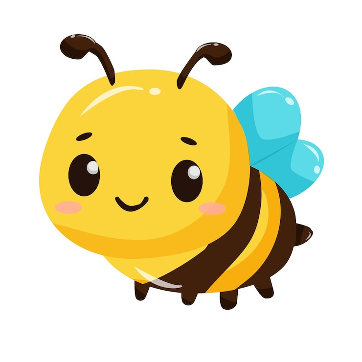

Meu primeiro post
Por:Melissa dos Santos da Silva
Boas-vindas! Aqui vou mostrar 10 curiosidades que parecem mentira de tão incomuns.
Aqui você vai ver 10 curiosidades científicas, históricas e sobre o mundo.
Por:Melissa dos Santos da Silva
Boas-vindas! Aqui vou mostrar 10 curiosidades que parecem mentira de tão incomuns.
A luz do Sol leva aproximadamente 8 minutos e 20 segundos para chegar à Terra. Isso acontece porque o Sol está a cerca de 150 milhões de quilômetros de nós, e a luz viaja a quase 300 mil quilômetros por segundo. Por isso, quando olhamos para o Sol, estamos vendo como ele era há mais de oito minutos!
Fonte://revistaoeste.com/variedades.com
Clique aqui para visitar o site
As abelhas conseguem aprender a reconhecer rostos humanos. Em experimentos, pesquisadores mostraram diferentes imagens de rostos e deram açúcar como recompensa quando elas escolhiam o rosto correto. Depois de alguns treinamentos, as abelhas conseguiam identificar o rosto que haviam aprendido, mostrando uma incrível capacidade de memória e aprendizagem.
Fonte://ecoa.org.br/abelhas-sao-capazes-de-imaginar-reconhecer-rostos-e-ter-emocoes-afirma-pesquisador/
Clique aqui para visitar o siteAs árvores não falam como os seres humanos, mas conseguem transmitir informações de outras formas. Elas emitem sinais elétricos e químicos que podem indicar como estão e o que está acontecendo ao seu redor. Esses sinais podem mudar de acordo com fatores como temperatura, umidade e hidratação. Um projeto na Irlanda utiliza sensores para registrar essas informações. Os dados ajudam os pesquisadores a entender melhor o comportamento e as condições das árvores. Assim, é possível perceber que as árvores possuem formas próprias de comunicação.
Fontes: https://www.terra.com.br/vida-e-estilo/as-arvores-podem-falar-um-projeto-irlandes-afirma-que-sim-entenda-porque,46e485a10f0fd9d751e813221be2019dpo0249c4.html
Clique aqui para visitar o siteExistem vulcões em vários lugares do Sistema Solar, além da Terra. Em Vênus, existem mais de mil vulcões conhecidos. Marte possui o maior vulcão do Sistema Solar, o Monte Olimpo. Já em Io, uma das luas de Júpiter, existem vulcões muito ativos. Há também criovulcões, que liberam água, gelo e gases em vez de lava. Essas descobertas mostram que a atividade vulcânica também acontece no espaço.
Fonte: https://spaceplace-nasa-gov.translate.goog/volcanoes/en/?_x_tr_sl=en&_x_tr_tl=pt&_x_tr_hl=pt&_x_tr_pto=tc
A Universidade de Oxford, na Inglaterra, é mais antiga que o próprio Império Asteca. Embora a data exata de sua fundação não seja conhecida, há registros de ensino em Oxford desde o século XI, enquanto os astecas estabeleceram seu império somente no século XV. Isso significa que Oxford já existia há centenas de anos quando os astecas começaram a construir um dos maiores impérios da América. Essa comparação mostra como diferentes civilizações se desenvolveram em períodos muito distintos da história.
Fonte: https://aventurasnahistoria.com.br/noticias/reportagem/universidade-de-oxford-e-mais-antiga-que-o-imperio-asteca.phtml
Clique aqui para visitar o site